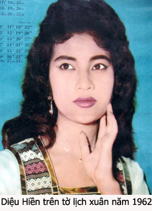
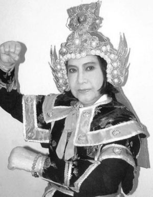
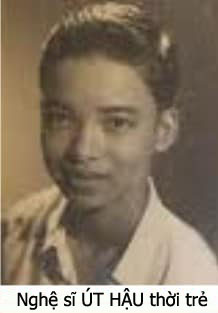

Thời xưa, ở các tỉnh miền đồng bằng sông Cửu Long, giao thông vận tải đường bộ chưa được mở mang nhiều, các gánh hát phải dùng ghe chài, ghe bầu để di chuyển đến các bãi hát. Đó là sự bình thường. Trong các thập niên 1960, 1970, đường sá mở mang, xe đò, xe tải rất nhiều, các “Ghe Hát” được cải danh là “Đoàn Hát” vì giới nghệ thuật sân khấu đã dùng xe hơi, xe tải, xe nhà, để di chuyển từ tỉnh nầy đến tỉnh khác và thường đi thành từng đoàn xe, vừa tiện lợi, vừa nhanh chóng.

.Sau năm 1975 (từ 1975 đến 1990) các đoàn hát ở miền Tây lại phải di chuyển bằng ghe. Không phải vì đường sá hư, mà chính vì thời kỳ đó, các chủ xe đò, xe tải, phải vô “hợp tác xã”; xe hơi hư thì người chủ phải bỏ tiền ra sửa chữa. Tiền xăng nhớt, tiền công tài xế, chủ nhơn chiếc xe phải trả, nhưng khi có thu nhập thì chủ xe phải giao nạp hết cho trưởng ban hợp tác xã để trưởng ban phân chia.
Làm ăn lỗ lã như vậy, xe hư, chủ nhơn không bỏ tiền ra sửa nữa. Tài xế có đòi tăng lương hay làm khó dễ thì chủ xe bỏ cho xe nằm “ga ra” luôn, không cho xe chạy nữa.
Trong tình trạng đó, khó có thể mướn xe đò và xe tải nên các đoàn hát phải dùng ghe để di chuyển như xưa. Có điều kém hơn xưa vì chỉ mướn được ghe nhỏ, khoan ghe khoảng hơn hai thước bề ngang và bề dài, khoảng hơn mười thước. Trên mui không để thoáng trống như xưa mà dùng để chất phông cảnh, màn, cánh gà…
Vận chuyển trên sông thật vất vả, nhất là lên xuống đồ đạc thì anh em dàn cảnh rất cực. Có những bến từ bãi diễn đến bến sông ghe đậu cách cả vài trăm thước. Có những đêm hát xong, gặp lúc nước sông ròng cạn, đưa đồ đạc xuống là cả vấn đề khó khăn, có khi đến 3, 4 giờ sáng ghe mới nhổ neo rời bến.
Đến bến mới có khi tới trưa, tới chiều, anh em dàn cảnh, hậu đài vì quá mệt mỏi sau đêm diễn và chuyển bến nên chưa đến nơi họ đã ngủ vùi trên ghe.
Nữ nghệ sĩ Diệu Hiền, nghệ sĩ Hoàng Liêm, Tấn An, Xuân Lan đi hát cho đoàn Tiếng Ca Sông Cửu (năm 1980) Đoàn diễn ở xã Vĩnh Trạch ( Cà Mau ) dời bến vô huyện Năm Căn, cách xa một ngày đường ghe. Trên đường di chuyển, đoàn cho ghe ghé lại một bến, tạm nghỉ vì toàn đoàn đã mệt lả sau đêm diễn mà phải chuyển bến khó khăn như đã kể trên.
Đào kép ngủ trong khoan ghe. Diệu Hiền là đào chánh nên được xếp nằm ở giữa ghe. Anh em công nhân dàn cảnh và các em phụ diễn chia nhau ngủ ở mũi ghe và lái ghe.
Trời tối đần, mọi người đều ngủ mê man, tài công để trên mui ghe một ngọn đèn dầu để làm hiệu cho những ghe tàu khác thấy để tránh nạn va chạm nhau. Sóng nước làm chiếc ghe tròng trành, đèn đổ dầu phựt cháy. Dầu cháy lan tới khoang máy, làm cho thùng phuy đựng dầu cũng cháy luôn. Khi mọi người hay được thì mạnh ai nấy tìm cách thoát thân. Tiếng la kêu cứu hỗn loạn. Mấy người ngủ khoang ngoài, gần mũi ghe và lái ghe đều phóng xuống sông lội vô bờ.
Tội nghiệp Diệu Hiền, ngủ giữa khoang ghe, khi hay lửa cháy thì thùng dầu nổ, văng dầu ướt lưng cô, lửa cháy bùng trên lưng, cháy dài theo cánh tay trái và một phần cổ. Cô dẫy dụa kêu cứu, nhưng mọi người đang kinh hoảng, không ai nghe được tiếng kêu la thất thanh của Diệu Hiền.
Hoàng Liêm đã nhảy xuống sông, vì ghe cột gần bờ nên anh lội vô, leo lên bờ và lớn tiếng kêu la để những người nhảy xuống sông biết hướng mà lội vô bờ thay vì lội ra giữa sông hay thả xuôi theo dòng nước. Hoàng Liêm nhìn vô khoang ghe, thấy có bóng người trong biển lửa, liền nhớ đến Diệu Hiền. Anh nhảy xuống sông, lội ra và leo lên ghe mặc dầu lửa đang cháy dữ dội. Anh thấy Diệu Hiền đã bất tỉnh, lấy mền dập tắt lửa trên mình Diệu Hiền rồi bồng cô ra trước mũi ghe. Lúc nầy nhiều anh em dàn cảnh đã bình tĩnh trở lại, thấy có ghe thương hồ đi ngang liền nhờ ghe tới chở Diệu Hiền vô phòng y tế huyện Năm Căn để cấp cứu.
Ngọn lửa cháy mạnh, ghe chìm dần dưới đáy sông. Tài sản của đoàn, của anh em nghệ sĩ bị thiệt hại hết, nhưng thiệt hại lớn nhất là tình trạng bị phỏng nặng của nữ diễn viên chánh của đoàn: cô Diệu Hiền. Y tế huyện Năm Căn thoa dầu cá thu những nơi bị phỏng của cô, cho uống thuốc giảm đau rồi nhờ tàu máy chở cô ra tỉnh gấp. Hoàng Liêm và anh Trưởng đoàn đi theo lo lắng giúp đỡ cho cô.
Bệnh viện Cà Mau lại chở Diệu Hiền cấp tốc tới bệnh viện đa khoa Cần Thơ. Tại đây cô được điều trị suốt ba tháng, hai lần phải mổ chỉnh hình, tách rời mấy ngón tay ra vì tay trái bị cháy nặng, khi ở Năm Căn băng bó, vô tình làm cho da các ngón tay dính với nhau.
Lúc đó tôi giúp việc cho đoàn Phước Chung, hát ở Cần Thơ.
Chúng tôi có đến thăm Diệu Hiền, được Hoàng Liêm kể cho nghe chuyện ghe bị cháy, bị chìm và tai nạn của Diệu Hiền. Khi chúng tôi đến thăm thì Diệu Hiền đã khỏe lại nhiều rồi, tôi hỏi Diệu Hiền sức mạnh nào giúp cho cô giữ vững tinh thần trước tai nạn thảm khốc nầy?
Diệu Hiền cười buồn, nói với chúng tôi:
– Đời em khổ quá nhiều rồi, khổ vì dang dở nợ duyên, khổ vì không gặp may mắn trên đường sự nghiệp như bao bạn bè trang lứa, em còn phải bám vào sân khấu để kiếm sống và nuôi dạy hai con… Nói tóm lại số phận em không được tốt, em không chịu thua số phận. Có vậy thôi! Em phải phấn đấu tới cùng để đạt được những gì mà em thua sút bạn bè trang lứa. Em sẽ làm cho các con của em không phải chịu thiệt thòi như đời em đã chịu.

.DIỆU HIỀN đã trở lại sàn diễn và nổi danh trong vai “Nhụy Kiều Tướng quân” tuồng Bùi Thị Xuân, nhận nhiều huy chương vàng hội diễn ở Sài gòn và các tỉnh miền Tây.
Con gái lớn của cô là Diệu Thanh, nối nghiệp mẹ, là diễn viên chánh của đoàn Bông Hồng Vàng. Con trai thứ là Quang Bình nhạc sĩ tân nhạc, thu thanh ra được nhiều album nhạc trẻ nổi tiếng.
Bạn bè trong giới sân khấu và khán giả quen gọi Diệu Hiền là “Nhụy Kiều Tướng quân” và ở các tụ điểm ca nhạc cổ, khán giả ái mộ yêu cầu cô ca lại câu vọng cổ mà họ ưa thích:
Nhạc:
Nầy lửa hỡi … Hãy nghe đây,
Lời trăn trối của hôm nay,
Có nghe không? Hỡi lửa hồng,
Hãy thay ta, ngăn bước quân thù,
Giữ vững yên lành, cho quê hương
Mãi mãi đẹp xinh!
(Tiếng hát hậu trường)
Người con gái hỡi! Hãy nghe đây,
Lời thương xót của quê hương,
Hỡi em ơi, khi lửa hồng kia vẫn còn
Thiêu đốt thân nàng,
Đôi tay đành – sắp bỏ thanh gươm.
Nhụy Kiều ca vọng cổ:
2# – Thanh gươm nầy sẽ nằm trong tay ta mãi mãi dù thân xác ta sắp từ giã cõi dương trần… Máu hồng ơi! chầm chậm khoan tuôn đổ phút giây nầy, Cho ta hướng mắt nhìn về đất mẹ một lần sau cùng rồi nhắm mắt xuôi tay. Chút hơi tàn xin dâng trọn quê hương. Cha mẹ hỡi! Thôi từ nay xin vĩnh biệt... Thanh kiếm hỡi … Hãy giúp ta lần sau cuối, đánh đuổi quân thù để giành lại quê hương.
Giọng ca của cô rất mạnh mẽ, cao vút như đang xung trận, khung cảnh sân khấu bừng bừng lửa đỏ, cộng với tiếng reo hò tở mở của quân binh tướng sĩ, dường như là cảnh tượng nầy đã gợi lại cảnh cô suýt bị chết cháy trên sông nên cô diễn xuất thần, biểu lộ cái dũng mãnh của người quyết tâm giành sự sống, giành lấy cái chiến thắng sau cùng..
Diệu Hiền là một diễn viên thanh sắc lưỡng toàn, nổi danh từ đầu năm 1960. Đáng lẽ cô được dự tuyển chọn diễn viên triển vọng Huy Chương Vàng Giải Thanh Tâm như các cô Thanh Nga, Bích Sơn, Thanh Thanh Hoa …, nhưng chuyện gia đình rối rắm của cô đã ngăn bước tiến triển của cô trên đường sự nghiệp sân khấu.
Khán giả mộ điệu sân khấu cải lương trong những thập niên 1950, 1960, 1970, không thể nào quên vợ chồng nghệ sĩ tài danh Út Hậu và Diệu Hiền.

Út Hậu, tên thật là Trần Quảng Hậu, sanh năm 1939, được cha mẹ gởi đi tu ở chùa Thiên Phước Tự ở Trà Ôn từ năm lên 7 tuổi.
Trong chùa, Tiểu Hậu lễ Phật, đọc kinh, giọng trong, sang sảng như tiếng chuông ngân. Năm 12 tuổi, vì có giọng tốt, Tiểu Hậu được Ban nhạc lễ cúng đình nhờ đứng xướng danh các chức sắc trong Ban cúng tế.
Nhạc sĩ Mười Kiên trưởng Ban nhạc lễ nhận Tiểu Hậu làm đệ tử, dạy ca cổ nhạc (vọng cổ và các bài bản nhỏ). Tiếng đàn kìm, câu ca vọng cổ của ông Mười Kiên đã khơi dậy trong anh cái hồn nghệ sĩ và làm sôi lên dòng máu giang hồ mà câu kinh tiếng kệ không thể làm cho lãng quên được.
Năm 16 tuổi Tiểu Hậu quyết định rời chùa, đi tìm gánh hát để thỏa mơ ước trở thành một diễn viên sân khấu. Đến Sàigòn, may mắn đầu tiên là anh được nhận vào đoàn Kim Thanh của anh Út Trà Ôn do bốn tài danh sân khấu đương thời chung vốn thành lập (Kim Chưởng, Thanh Tao, Út Trà Ôn và vợ chồng Thúy Nga – Phước Trọng)
Đoàn Kim Thanh lúc đó (1955) đang tập tuồng để chuẩn bị khai trương gánh hát tại rạp Aristo tức là Trung Uơng Hí Viện ở đường Lê Lai, cạnh ga xe lửa Sàigòn.
Trần Quảng Hậu được Út Trà Ôn thu làm đệ tử và đặt cho nghệ danh là Út Hậu.
Út Hậu chỉ xuất hiện trong một vai khiêm tốn, nhưng có ca hai câu vọng cổ do soạn giả Thu An sáng tác thêm cho anh theo yêu cầu của anh Út Trà Ôn. Báo chí kịch trường thời đó phê bình buổi diễn khai trương của Đoàn Kim Thanh, ngoài việc khen tuồng hay, đào kép ca diễn giỏi, có đặc biệt lưu ý về sự xuất hiện của một kép ca: Út Hậu mà ký giả Hoài Ngọc tiên đoán là Út Hậu sẽ là một danh ca vọng cổ như Út Trà Ôn.
Một năm sau, Đoàn Kim Thanh giải tán.
Út Hậu gia nhập Đoàn Thanh Minh (Bầu Nghĩa), đã thành công trong vai Phù Đổng, vở Phù Đổng Thiên Vương của soạn giả Ngọc Huyền Lan (tức ký giả Nguyễn Ang Ca) và đã đóng chung với Thanh Nga trong vở tuồng Phận Trẻ Lạc Loài của soạn giả Lê Khanh.
Năm 18 tuổi, anh được soạn giả Bạch Vân mời về, chung vốn thành lập đoàn Mai Hoa – Út Hậu.
Út Hậu hùn vốn có nghĩa là tiền contrat anh ký với Bầu Mai Hoa được bỏ vô làm vốn chung của gánh hát; tuy có danh nghĩa là bầu nhưng mọi việc chi xuất tài chánh là đều thuộc quyền của ông Bầu Bạch Vân, chồng của cô đào Mai Hoa. Út Hậu chỉ lãnh lương đêm như bao nhiêu nghệ sĩ khác trong đoàn. Năm nầy Út Hậu được nhiều người biết tới, nhứt là giới bầu gánh, soạn giả và khán giả các tỉnh miền Tây vì báo chí kịch trường rất khen anh qua các vai diễn trong tuồng “Nửa mảnh tim“, ” Mái tóc người vợ trẻ ”
Cũng tại sân khấu nầy anh thành hôn với nữ nghệ sĩ Diệu Hiền, một tài danh vừa chớm nở trên vòm trời nghệ thuật cải lương ở miền Tây. Út Hậu và Diệu Hiền chung sống, có được hai con tên là Diệu Thanh và Quang Bình.
Hai năm sau, Đoàn Mai Hoa – Út Hậu giải tán.
Út Hậu trở về hát cho đoàn Thống Nhất của anh Út Trà Ôn.
Và năm sau nữa, anh rời đoàn Thống Nhất của Út Trà Ôn, về hát cho đoàn Kim Chung của Bầu Long.
Vì liên tục thay đổi đoàn hát, nghề nghiệp của Út Hậu không tiến triển được. Các ký giả kịch trường cũng bớt khen ngợi hay phê bình anh, mặc dầu trong thời gian đầu khi anh về cộng tác với đoàn Kim Chung, anh rất thành công qua các vai Lữ An Tùng trong vở “Nhạn Về Xóm Liễu“, vai Tường Vi trong vở ” Bên Cầu Vọng Thê “.
Năm 1965, Út Hậu muốn về đoàn Kim Chung 6 đang lưu diễn miền Trung để nắm vai chánh các vở tuồng của đoàn nầy thay vì lẩn quẩn ở các đoàn Kim Chung 1,2,3 nơi mà Út Hậu không thể hát hay hơn Hùng Cường, Minh Phụng, Minh Vương.
Nữ nghệ sĩ Diệu Hiền, vợ anh khuyên anh cùng về hát cho đoàn Tấn Tài, trước nhứt là vợ chồng con cái được đoàn tụ bên nhau, lo liệu chăm sóc lẫn nhau, sau nữa là đoàn Tấn Tài chuyên lưu diễn ở các tỉnh miền Tây, nơi mà khán giả còn dành nhiều cảm tình ưu ái cho cặp nghệ sĩ danh ca Út Hậu – Diệu Hiền, như vậy thì dễ thành đạt trên con đường sự nghiệp sân khấu hơn.
Vì không đồng ý nhau về việc chọn đoàn hát để cộng tác mà hai vợ chồng Út Hậu – Diệu Hiền to tiếng cãi vã nhau, kết quả là hai vợ chồng thôi nhau, kẻ đi theo đoàn Kim Chung 6 ở miền Trung, người theo đoàn Tấn Tài ở miền Tây.
Cho đến 10 năm sau, Út Hậu mới rời đoàn Kim Chung để về cộng tác với đoàn Thủ Đô – Tấn Tài thì Diệu Hiền bỏ đi cộng tác với đoàn khác. Hạnh phúc gia đình đổ vỡ không thể nào hàn gắn được.
Sau năm 1975 đến năm 1996, Út Hậu theo các đoàn hát hát ở miền Trung (đoàn Sông Hàn, đoàn Hoa Biển)
Cuối năm 1999, Út Hậu bị tai biến mạch máu não, bị bán thân bất toại ở Tuy Hòa.
Diệu Hiền đưa tiền cho con gái lớn là Diệu Thanh ra Tuy Hòa đưa Út Hậu về Sàigòn để điều trị.
Hiện nay Út Hậu tá túc trong nhà dưỡng lão của Nghệ sĩ ở quận 8. Tôi có đến thăm anh một lần, anh nói:
– Tiểu Hậu đã bỏ chùa, bỏ Phật để chạy đuổi theo hư vinh, quên cả vợ con vì tham vọng cá nhân, bây giờ khi hiểu được câu kinh kệ “Sắc tức thị Không, Không tức thị Sắc ” thì không còn có thể trở lại chùa được nữa.
Tôi cười, nói: “Phật tại tâm. Anh muốn tu thì ở nhà dưỡng lão cũng là tu rồi.”
Phần của Diệu Hiền thì phải nói là cô hy sinh tất cả để chăm sóc nuôi dưỡng hai con Diệu Thanh và Quang Bình. Mặc dầu đang là một nữ diễn viên thanh sắc vẹn toàn, có thu nhập cao trong một đoàn hát tỉnh, nhiều người ngấm nghé muốn kết hôn với cô, nhưng cô không muốn bước thêm bước nữa. Sự đổ vỡ của mối tình đầu, cũng là mối tình cuối của cô, làm cho cô nghi ngờ tất cả những lời nói yêu đương của nam giới. Cô chỉ muốn được yên tâm theo đuổi nghề hát để lấy đó làm kế mưu sinh và có phương tiện để nuôi dạy hai con của cô.